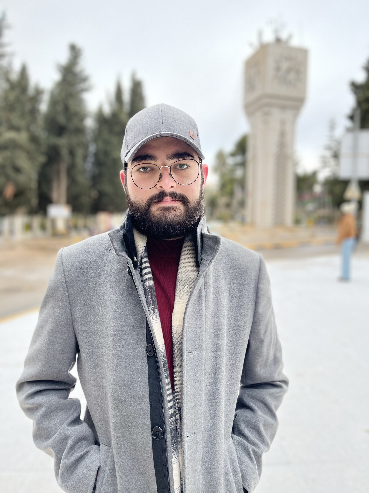

.png) OBJECTIVE
OBJECTIVEDedicated and passionate candidate seeking admission to a high diploma program (postgraduate) in Canada. Motivated to advance my knowledge of information technology (AI) by taking advantage of the chances Canada provides for academic advancement and cultural development. Through this educational path, I hope to make meaningful contributions to both academics and society.
English language
| ELS Language School Malaysia
2016
Learned English language form scratch (speaking, writing, listening, and reading).
Highschool
| The Eastern School
2016 – 2018
High school degree, British section (A and AS level) with a score of (86).
BIT Bachelor’s
| University of Jordan
2019 – 2023
bachelor’s degree in business information technology with 2.99 GPA.
Student council
| The Eastern School
2016 – 2018
Monitoring new students and helping primary students to get to classes.
Teaching
| University of Jordan
2019 – 2023
Helping students to understand hard topics
Clube Member
| University of Jordan
2019 – 2023
Social Media Member.
E-commerce website
| University of Jordan
2023
Building back-end for e-commerce from scratch using php.
Graduation project
| University of Jordan
2023
Working on research and building a prediction model using python for Cybercrime Rate Prediction Research
Use this section to highlight your relevant passions, activities, and how you like to give back. It’s good to include Leadership and volunteer experience here. Or show off important extras like publications, certifications, languages and more. Challenging myself add new experience and knowledge every day is what I am good about and with the ability to help the people around me to do their best this is one of the things I reinforced it to me by taking the principle of leadership and management course. Also, I went with a group of students to Nazik Al Hariri welfare center for special education to spend time playing with the students there.
.png)